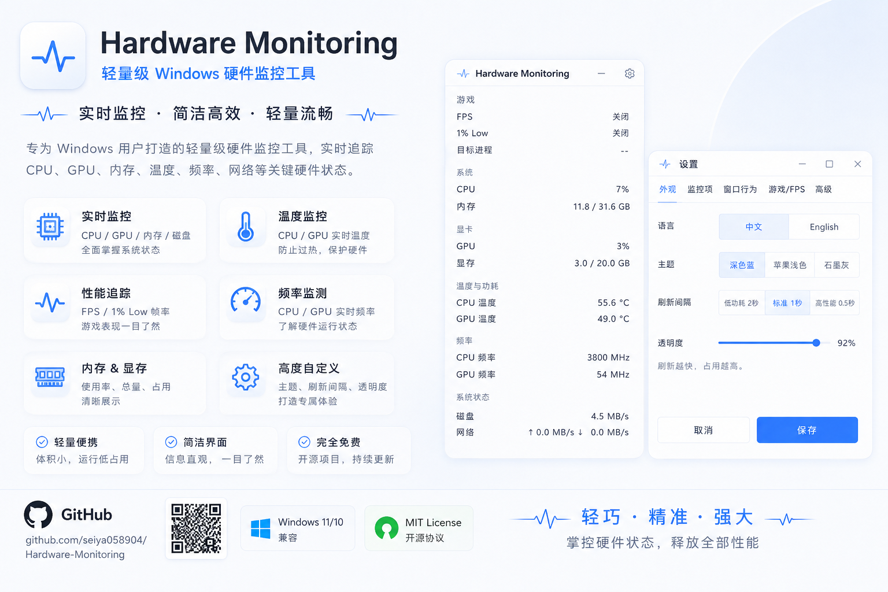
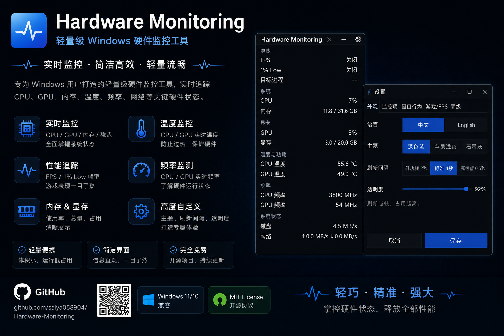

正在持续更新
这个网站会持续记录我的学习路线、项目实践和阶段成果。

这个网站会持续记录我的学习路线、项目实践和阶段成果。

我是一名学生，对计算机、英语、计算机硬件和软件感兴趣。目前正在学习网页开发、编程基础、计算机系统和常用开发工具。 我希望通过这个网站记录学习过程，展示项目作品，并逐步建立自己的技术主页。
HTML、CSS、JavaScript
Python / C / JavaScript（持续学习中）
Windows、硬件、软件工具
技术英文阅读、日常表达
这里收集我整理成网页形式的 PPT 内容。首页负责展示目录，点击卡片后会进入对应的独立页面查看完整内容。
HTML PPT
一份电子杂志风格的网页 PPT，围绕人工智能如何影响学习、工作、生活方式和社会结构展开展示。
HTML PPT
从日常生活视角切入，展示人工智能怎样进入沟通、消费、学习和工作等常见场景。
HTML PPT
以人物成长和技术影响为主线，介绍比尔·盖茨的经历、理念以及他对时代的推动作用。
HTML PPT
解释芯片在手机、电脑、网络和现代工业中的基础作用，适合作为科技主题展示内容。
HTML PPT
从计时工具出发，讲述时间观念如何影响社会秩序、工作安排和现代生活方式。
HTML PPT
用通俗方式介绍冷链系统如何保障食物运输、安全保存和现代城市供应链运转。
HTML PPT
从最基础的锁具讲到安全技术演进，适合用来展示“安全感是如何被制造出来的”。
HTML PPT
围绕现代医学与人类寿命展开，介绍医疗进步怎样一步步延长和改善人的生活质量。
HTML PPT
从垃圾产生、分类、运输到处理，解释“被扔掉的东西”实际上如何继续影响环境与城市。
HTML PPT
以 2005 到 2025 为时间线，回顾科技、互联网和社会习惯在二十年里的变化。
以下项目来自我的真实 GitHub 仓库，持续更新中。
Email：3056650641@qq.com